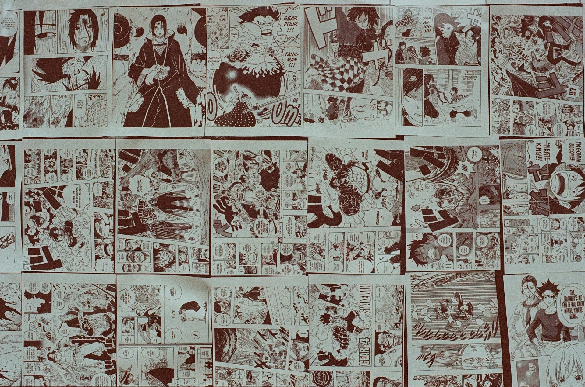

I love to draw a lot and is one of my favourite things to do when I am bored or even when I am feeling down. My favourit type of drawing are portrait drawind which is just drawing the head and torso of a person.
Learn More...
Soccer is my most favourite sport and what I love to do in my free time I love learning new skills and tricks to do in football and I also love scoring goals. My favourite Soccer player is Cristiano Ronaldo and my favourite club is Chelsea
About Cristiano Ronaldo chelseafc.jpg)
Anime is my favourite form of entertainment; This is a Japanese animation with several genres which can both come in series and movies. My favourite anime is Jujutsu Kaisen because it has a lot of plot twists and action, as well as the animation, it's really good and I recommend watching it.
Learn More... 